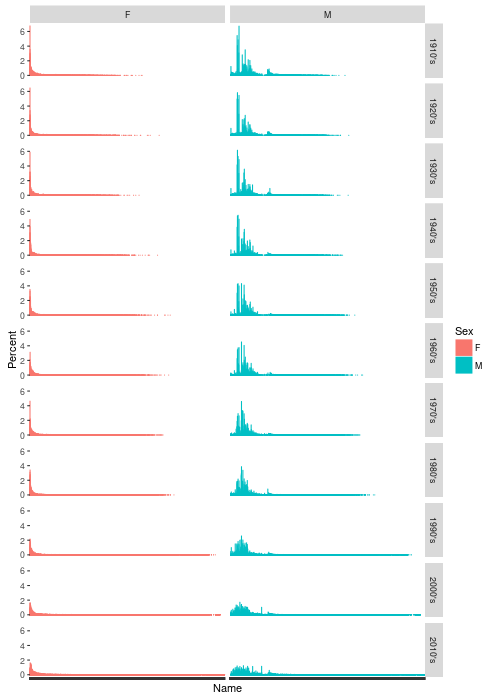

Introduction To Programming In R
Table of Contents
- Workshop overview and materials
- Extracting information from a text file (string manipulation)
- Reading all the files (iteration, functions)
- Reading .csv files
- Extracting and replacing vector elements
- Extracting and replacing list elements
- Back to the problem at hand: reading data into a list
- Exercise 2: String manipulation, extraction and replacement
- Iterating using the map function
- Writing your own functions
- Exercise 3: Iteration, file IO, functions
- Adding a Year column (data structures, indexing)
- Final England and Wales data cleanup
- Get US data (strings, iteration, function recap)
- What can we learn about baby names? (data frame manipulation, graphing)
- Other stuff
- What else?
- Go forth and code!
- Additional reading and resources
- Epilogue: Things that may surprise you
Workshop overview and materials
Workshop description
This is an intermediate/advanced R course appropriate for those with basic knowledge of R. It is intended for those already comfortable with using R for data analysis who wish to move on to writing their own functions.
Prerequisite: basic familiarity with R, such as acquired from an introductory R workshop.
To the extent possible this workshop uses real-world examples. That is to say that concepts are introduced as they are needed for a realistic analysis task. In the course of working through a realistic project we will lean about regular expressions, iteration, functions, control flow and more.
This workshop uses the tidyverse package which provides more consistent file IO (readr), data manipulation (dplyr, tidyr) and functional programming (purrr) tools for R.
Materials and setup
Everyone should have R installed – if not:
- Open a web browser and go to http://cran.r-project.org and download and install it
- Also helpful to install RStudio (download from http://rstudio.com)
Materials for this workshop consists of notes and example code.
- Download materials from http://tutorials.iq.harvard.edu/R/RProgramming.zip
- Extract the zip file containing the materials to your desktop
Example project overview
It is common for data to be made available on a website somewhere, either by a government agency, research group, or other organizations and entities. Often the data you want is spread over many files, and retrieving it all one file at a time is tedious and time consuming. Such is the case with the baby names data we will be using today.
The UK Office for National Statistics provides yearly data on the most popular baby names going back to 1996. The data is provided separately for boys and girls. These data have been cleaned up and copied to http://tutorials.iq.harvard.edu/example_data/baby_names/. Although we could open a web browser and download files one at a time, it will be faster and easier to instruct R to do that for us. Doing it this way will also give us an excuse to talk about iteration, text processing, and other useful techniques.
Extracting information from a text file (string manipulation)
Our first goal is to download all the .csv files from http://tutorials.iq.harvard.edu/example_data/baby_names/EW.
In order to do that we need a list of the Uniform Resource Locators (URLs) of those files. The URLs we need are right there as links in the web page. All we need to do is extract them.
Introduction to the tidyverse
In order extract the data URls from the website we will use functions for manipulating strings1. What functions or packages should we use? Here are some tools to help us decide.
- Task views
- https://cran.r-project.org/web/views/NaturalLanguageProcessing.html
- R package search
- http://www.r-pkg.org/search.html?q=string
- Web search
- https://www.google.com/search?q=R+string+manipulation&ie=utf-8&oe=utf-8
Base R provides some string manipulation capabilities (see ?regex, ?sub and ?grep), but I recommend either the stringr or stringi packages. The stringr package is more user-friendly, and the stringi package is more powerful and complex. Let's use the friendlier one. While we're attaching packages we'll also attach the tidyverse package which provides more modern versions of many basic functions in R.
## install.packages("tidyverse") library(tidyverse) library(stringr)
Packages in the tidyverse are often more convenient to use with pipes rather than nested function calls. The pipe operator looks like %>% and it inserts the value on the left as the first argument to the function on the right. It looks like this:
(x <- rnorm(5)) # extra parens around expression is a shortcut to assign and print ## nested function calls to sort and round round(sort(x), digits = 2) ## pipeline that does the same thing x %>% sort() %>% round(digits = 2) ## nested function calls to sample letters, convert to uppercase and sort. sort( str_to_upper( sample(letters, 5, replace = TRUE))) ## pipeline that does the same thing: letters %>% sample(5, replace = TRUE) %>% str_to_upper() %>% sort()
> (x <- rnorm(5)) # extra parens around expression is a shortcut to assign and print [1] 1.19778677 -0.62423939 -0.13286966 -0.01722092 -0.45962928 > > ## nested function calls to sort and round > round(sort(x), digits = 2) [1] -0.62 -0.46 -0.13 -0.02 1.20 > > ## pipeline that does the same thing > x %>% + sort() %>% + round(digits = 2) [1] -0.62 -0.46 -0.13 -0.02 1.20 > > ## nested function calls to sample letters, convert to uppercase and sort. > sort( + str_to_upper( + sample(letters, + 5, + replace = TRUE))) [1] "A" "A" "C" "Y" "Z" > > ## pipeline that does the same thing: > letters %>% + sample(5, replace = TRUE) %>% + str_to_upper() %>% + sort() [1] "A" "J" "K" "O" "R" >
The examples in this workshop use the pipe when it makes examples easier to follow.
Reading text over http
Our first task is to read the web page into R. Most of the file IO functions in R can read either from a local path or from internet URLS. We can read text into R line-by-line using the read_lines function.
base.url <- "http://tutorials.iq.harvard.edu" baby.names.path <- "example_data/baby_names/EW" baby.names.url <- str_c(base.url, baby.names.path, sep = "/") baby.names.page <- read_lines(baby.names.url)
Now that we have some values to play with lets look closer. R has nice tools for inspecting the object attributes such as the storage mode, length, and class. The str (structure) and glimpse function gives a nice overview.
## whate is base.url? mode(base.url) length(base.url) class(base.url) str(base.url) ## what is baby.names.url? mode(baby.names.url) length(baby.names.url) class(baby.names.url) str(baby.names.url) ## what is baby.names.page? mode(baby.names.page) length(baby.names.page) class(baby.names.page) str(baby.names.page)
> ## whate is base.url? > mode(base.url) [1] "character" > length(base.url) [1] 1 > class(base.url) [1] "character" > str(base.url) chr "http://tutorials.iq.harvard.edu" > > ## what is baby.names.url? > mode(baby.names.url) [1] "character" > length(baby.names.url) [1] 1 > class(baby.names.url) [1] "character" > str(baby.names.url) chr "http://tutorials.iq.harvard.edu/example_data/baby_names/EW" > > ## what is baby.names.page? > mode(baby.names.page) [1] "character" > length(baby.names.page) [1] 53 > class(baby.names.page) [1] "character" > str(baby.names.page) chr [1:53] "<!DOCTYPE HTML PUBLIC \"-//W3C//DTD HTML 3.2 Final//EN\">" ... >
The S3 class system in R allows functions to define methods for specific classes. If we know the class of an object we can see what functions have methods specific to that class.
methods(class = class(base.url))
> methods(class = class(base.url)) [1] all.equal as.data.frame as.Date [4] as_function as.POSIXlt as.raster [7] coerce coerce<- escape [10] formula getDLLRegisteredRoutines Ops [13] recode see '?methods' for accessing help and source code >
Note that these methods are not exhaustive – we can do other things with these objects as well. methods(class = ) just tells you which functions have specific methods for working with objects of that class.
The mode function tells us how the object is stored in memory. "Character" is one of the six atomic modes in R. The others are "logical", "integer", "numeric (double)", "complex", and "raw". Objects reporting their mode as one of these are atomic vectors; they are the building blocks of most data structures in R.
Now that we know what we're working with we can proceed to find and extract all the links in the page. Lets start by printing the last few lines of baby.names.page.
cat(tail(baby.names.page), sep = "\n")
> cat(tail(baby.names.page), sep = "\n") <tr><td valign="top"><img src="/icons/unknown.gif" alt="[ ]"></td><td><a href="girls_2014.csv">girls_2014.csv</a></td><td align="right">06-Oct-2016 13:12 </td><td align="right">144K</td></tr> <tr><td valign="top"><img src="/icons/unknown.gif" alt="[ ]"></td><td><a href="girls_2015.csv">girls_2015.csv</a></td><td align="right">06-Oct-2016 13:12 </td><td align="right">145K</td></tr> <tr><th colspan="5"><hr></th></tr> </table> <address>Apache/2.2.3 (Red Hat) Server at tutorials.iq.harvard.edu Port 80</address> </body></html> >
We want to extract the "href" attributes, i.e., "girls_2014.csv" and "girls_2015.csv" in the above snippet. We can do that using the str_extract function, but in order to use it effectively we need to know something about regular expressions.
String manipulation with the stringr package
Regular expressions are useful in general (not just in R!) and it is a good idea to be familiar with at least the basics.
In regulars expression ^, ., *, +, $ and \ are special characters with the following meanings:
- ^
- matches the beginning of the string
- .
- matches any character
- *
- repeats the previous match zero or more times
- +
- repeats the previous match one or more times
- $
- matches the end of the string
- []
- specifies ranges of characters: [a-z] matches lower case letters
- \
- escapes special meaning: '.' means "anything", '\.' means "."
Here's how it works in R using the stringr package. Note that to create a backslash you must escape it with anouth backslash.
user.info <- c("Dexter Bacon dbacon@gmail.com 32", "Angelica Sampson not available 28", "Roberta Modela roberta.modela@harvard.edu 26" ) email.regex <- "([a-z0-9_\\.-]+@[a-z0-9\\.-]+\\.[a-z\\.]+)" str_detect(user.info, email.regex) str_subset(user.info, email.regex) str_extract(user.info, email.regex) str_replace(user.info, email.regex, "<a href='\\1'>\\1</a>")
> user.info <- c("Dexter Bacon dbacon@gmail.com 32",
+ "Angelica Sampson not available 28",
+ "Roberta Modela roberta.modela@harvard.edu 26"
+ )
> email.regex <- "([a-z0-9_\\.-]+@[a-z0-9\\.-]+\\.[a-z\\.]+)"
> str_detect(user.info, email.regex)
[1] TRUE FALSE TRUE
> str_subset(user.info, email.regex)
[1] "Dexter Bacon dbacon@gmail.com 32"
[2] "Roberta Modela roberta.modela@harvard.edu 26"
> str_extract(user.info, email.regex)
[1] "dbacon@gmail.com" NA
[3] "roberta.modela@harvard.edu"
> str_replace(user.info, email.regex, "<a href='\\1'>\\1</a>")
[1] "Dexter Bacon <a href='dbacon@gmail.com'>dbacon@gmail.com</a> 32"
[2] "Angelica Sampson not available 28"
[3] "Roberta Modela <a href='roberta.modela@harvard.edu'>roberta.modela@harvard.edu</a> 26"
>
If you have not been introduced to regular expressions yet a nice interactive regex tester is available at http://www.regexr.com/ and an interactive tutorial is available at http://www.regexone.com/.
Exercise 1: string manipulation and regular expressions
Our job now is to match the file names using regular expressions. To get started lets copy an example string into the interactive regex tester at http://www.regexr.com/ and work with it until we find a regular expression that works.
- Open http://www.regexr.com/ in your web browser and paste in this string into the "Text" box (in the lower right-hand section of the page):
<tr><td valign="top"><img src="/icons/unknown.gif" alt="[ ]"></td><td><a href="girls_2014.csv">girls_2014.csv</a></td><td align="right">06-Oct-2016 13:12 </td><td align="right">144K</td></tr>
- Find a regular expression that matches '
girls_2014.csv' and nothing else. - Assign the regular expression you found to the name 'girl.file.regex' in R. Replace any backslashes with a double backslash.
- Extract the girl file names from
baby.names.pageand assign the values to the name 'girl.file.names' - Repeat steps 1:4 for boys.
- Use the
str_cfunction to prependbaby.names.urltogirl.file.namesandboy.file.names. Make sure to separate with a forward slash ("/").
Reading all the files (iteration, functions)
Reading .csv files
As mentioned earlier, we can read files directly from the internet. For example, we can read the first girls names file like this:
girl.names.1 <- read_csv(girl.file.names[1], na = "") head(girl.names.1)
> girl.names.1 <- read_csv(girl.file.names[1], na = "") > head(girl.names.1) # A tibble: 6 × 3 Rank Name Count <dbl> <chr> <dbl> 1 1 SOPHIE 7087 2 2 CHLOE 6824 3 3 JESSICA 6711 4 4 EMILY 6415 5 5 LAUREN 6299 6 6 HANNAH 5916 >
Notice that we selected the first element of girl.file.names using [. This is called bracket extraction and it is a very useful feature of the R language.
Extracting and replacing vector elements
Elements of R objects can be extracted and replaced using bracket notation. Bracket extraction comes in a few different flavors. We can index atomic vectors in several different ways. Let's start by making some example data to work with.
example.int.1 <- c(10, 11, 12, 13, 14, 15) str(example.int.1)
> example.int.1 <- c(10, 11, 12, 13, 14, 15) > str(example.int.1) num [1:6] 10 11 12 13 14 15 >
The names attribute can be used for indexing if it exists. The names attribute and be extracted and set using the names function, like this:
names(example.int.1) # no names yet, lets add sum names(example.int.1) <- c("a1", "a2", "b1", "b2", "c1", "c2") names(example.int.1) str(example.int.1)
> names(example.int.1) # no names yet, lets add sum
NULL
> names(example.int.1) <- c("a1", "a2", "b1", "b2", "c1", "c2")
> names(example.int.1)
[1] "a1" "a2" "b1" "b2" "c1" "c2"
> str(example.int.1)
Named num [1:6] 10 11 12 13 14 15
- attr(*, "names")= chr [1:6] "a1" "a2" "b1" "b2" ...
>
Indexing can be done by position.
## extract by position example.int.1[1] example.int.1[c(1, 3, 5)]
> ## extract by position > example.int.1[1] a1 10 > example.int.1[c(1, 3, 5)] a1 b1 c1 10 12 14 >
If an object has names you can index by name.
## extract by name example.int.1[c("c2", "a1")]
> ## extract by name
> example.int.1[c("c2", "a1")]
c2 a1
15 10
>
Finally, objects can be indexed with a logical vector, extracting only the TRUE elements.
## logical extraction (one.names <- str_detect(names(example.int.1), "1")) example.int.1[one.names] example.int.1[example.int.1 > 12]
> ## logical extraction > (one.names <- str_detect(names(example.int.1), "1")) [1] TRUE FALSE TRUE FALSE TRUE FALSE > example.int.1[one.names] a1 b1 c1 10 12 14 > example.int.1[example.int.1 > 12] b2 c1 c2 13 14 15 >
Attempting to extract beyond the existing range returns missing (NA).
## extract non-existent element example.int.1[10] example.int.1["z1"]
> ## extract non-existent element > example.int.1[10] <NA> NA > example.int.1["z1"] <NA> NA >
Replacement works by assigning a value to an extraction.
example.int.2 <- example.int.1 ## replace by position example.int.2[1] <- 100 ## replace by name example.int.2["a2"] <- 200 example.int.2 ## logical replacement (lt14 <- example.int.2 < 14) example.int.2[lt14] <- 0 example.int.2 ## "replace" non-existing element example.int.2[c("z1", "z2")] <- -10 ## compare lists to see the changes we made example.int.1 example.int.2
> example.int.2 <- example.int.1
>
> ## replace by position
> example.int.2[1] <- 100
>
> ## replace by name
> example.int.2["a2"] <- 200
> example.int.2
a1 a2 b1 b2 c1 c2
100 200 12 13 14 15
>
> ## logical replacement
> (lt14 <- example.int.2 < 14)
a1 a2 b1 b2 c1 c2
FALSE FALSE TRUE TRUE FALSE FALSE
> example.int.2[lt14] <- 0
> example.int.2
a1 a2 b1 b2 c1 c2
100 200 0 0 14 15
> ## "replace" non-existing element
> example.int.2[c("z1", "z2")] <- -10
>
> ## compare lists to see the changes we made
> example.int.1
a1 a2 b1 b2 c1 c2
10 11 12 13 14 15
> example.int.2
a1 a2 b1 b2 c1 c2 z1 z2
100 200 0 0 14 15 -10 -10
>
Extracting and replacing list elements
List elements can be extracted and replaced in the same way as elements of atomic vectors. In addition, [[ can be used to extract or replace the contents of a list element. Here is how it works:
example.list.1 <- list(a1 = c(a = 1, b = 2, c = 3), a2 = c(4, 5, 6), b1 = c("a", "b", "c", "d"), b2 = c("e", "f", "g", "h")) str(example.list.1) ## extract by position str(example.list.1[c(1, 3)]) str(example.list.1[1]) str(example.list.1[[1]]) # note the difference between [ and [[ ## extract by name str(example.list.1[c("a1", "a2")]) (a.names <- str_detect(names(example.list.1), "a")) str(example.list.1[a.names]) ## chained bracket extraction str(example.list.1[["a1"]][c("a", "c")]) ## logical extraction (el.length <- map_int(example.list.1, length)) (el.length4 <- el.length == 4) str(example.list.1[el.length4]) ## more logical extraction (a1.lt.3 <- example.list.1[["a1"]] < 3) str(example.list.1[["a1"]][a1.lt.3]) ## extract non-existent element example.list.1[["z"]]
> example.list.1 <- list(a1 = c(a = 1, b = 2, c = 3),
+ a2 = c(4, 5, 6),
+ b1 = c("a", "b", "c", "d"),
+ b2 = c("e", "f", "g", "h"))
> str(example.list.1)
List of 4
$ a1: Named num [1:3] 1 2 3
..- attr(*, "names")= chr [1:3] "a" "b" "c"
$ a2: num [1:3] 4 5 6
$ b1: chr [1:4] "a" "b" "c" "d"
$ b2: chr [1:4] "e" "f" "g" "h"
> ## extract by position
> str(example.list.1[c(1, 3)])
List of 2
$ a1: Named num [1:3] 1 2 3
..- attr(*, "names")= chr [1:3] "a" "b" "c"
$ b1: chr [1:4] "a" "b" "c" "d"
> str(example.list.1[1])
List of 1
$ a1: Named num [1:3] 1 2 3
..- attr(*, "names")= chr [1:3] "a" "b" "c"
> str(example.list.1[[1]]) # note the difference between [ and [[
Named num [1:3] 1 2 3
- attr(*, "names")= chr [1:3] "a" "b" "c"
> ## extract by name
> str(example.list.1[c("a1", "a2")])
List of 2
$ a1: Named num [1:3] 1 2 3
..- attr(*, "names")= chr [1:3] "a" "b" "c"
$ a2: num [1:3] 4 5 6
> (a.names <- str_detect(names(example.list.1), "a"))
[1] TRUE TRUE FALSE FALSE
> str(example.list.1[a.names])
List of 2
$ a1: Named num [1:3] 1 2 3
..- attr(*, "names")= chr [1:3] "a" "b" "c"
$ a2: num [1:3] 4 5 6
> ## chained bracket extraction
> str(example.list.1[["a1"]][c("a", "c")])
Named num [1:2] 1 3
- attr(*, "names")= chr [1:2] "a" "c"
> ## logical extraction
> (el.length <- map_int(example.list.1, length))
a1 a2 b1 b2
3 3 4 4
> (el.length4 <- el.length == 4)
a1 a2 b1 b2
FALSE FALSE TRUE TRUE
> str(example.list.1[el.length4])
List of 2
$ b1: chr [1:4] "a" "b" "c" "d"
$ b2: chr [1:4] "e" "f" "g" "h"
> ## more logical extraction
> (a1.lt.3 <- example.list.1[["a1"]] < 3)
a b c
TRUE TRUE FALSE
> str(example.list.1[["a1"]][a1.lt.3])
Named num [1:2] 1 2
- attr(*, "names")= chr [1:2] "a" "b"
> ## extract non-existent element
> example.list.1[["z"]]
NULL
>
As with vectors, replacement works by assigning a value to an extraction.
example.list.2 <- example.list.1 ## replace by position example.list.2[[1]] <- c(a = 11, b = 12, c = 13) ## replace by name example.list.2[["a2"]] <- c(10, 20, 30) ## iterate and replace by name example.list.2[c("a1", "a2")] <- map(example.list.2[c("a1", "a2")], function(x) x * 100) ## logical replacement with iteration (el.length <- map(example.list.2, length)) (el.length4 <- el.length == 4) example.list.2[el.length4] <- map(example.list.2[el.length4], function(x) str_c("letter", x, sep = "_")) ## "replace" non-existing element example.list.2[["c"]] <- list(x = letters[1:5], y = 1:5) ## compare lists to see the changes we made str(example.list.1) str(example.list.2)
> example.list.2 <- example.list.1
>
> ## replace by position
> example.list.2[[1]] <- c(a = 11, b = 12, c = 13)
> ## replace by name
> example.list.2[["a2"]] <- c(10, 20, 30)
> ## iterate and replace by name
> example.list.2[c("a1", "a2")] <- map(example.list.2[c("a1", "a2")],
+ function(x) x * 100)
> ## logical replacement with iteration
> (el.length <- map(example.list.2, length))
$a1
[1] 3
$a2
[1] 3
$b1
[1] 4
$b2
[1] 4
> (el.length4 <- el.length == 4)
a1 a2 b1 b2
FALSE FALSE TRUE TRUE
> example.list.2[el.length4] <- map(example.list.2[el.length4],
+ function(x) str_c("letter", x, sep = "_"))
> ## "replace" non-existing element
> example.list.2[["c"]] <- list(x = letters[1:5], y = 1:5)
>
> ## compare lists to see the changes we made
> str(example.list.1)
List of 4
$ a1: Named num [1:3] 1 2 3
..- attr(*, "names")= chr [1:3] "a" "b" "c"
$ a2: num [1:3] 4 5 6
$ b1: chr [1:4] "a" "b" "c" "d"
$ b2: chr [1:4] "e" "f" "g" "h"
> str(example.list.2)
List of 5
$ a1: Named num [1:3] 1100 1200 1300
..- attr(*, "names")= chr [1:3] "a" "b" "c"
$ a2: num [1:3] 1000 2000 3000
$ b1: chr [1:4] "letter_a" "letter_b" "letter_c" "letter_d"
$ b2: chr [1:4] "letter_e" "letter_f" "letter_g" "letter_h"
$ c :List of 2
..$ x: chr [1:5] "a" "b" "c" "d" ...
..$ y: int [1:5] 1 2 3 4 5
>
Back to the problem at hand: reading data into a list
Using our knowledge of bracket extraction we could start reading in the data files like this:
boys <- list() girls <- list() boys[[1]] <- read_csv(boy.file.names[1], na = "") boys[[2]] <- read_csv(boy.file.names[2], na = "") ## ... girls[[1]] <- read_csv(girl.file.names[1], na = "") girls[[2]] <- read_csv(girl.file.names[2], na = "") ## ...
> boys <- list() > girls <- list() > > boys[[1]] <- read_csv(boy.file.names[1], na = "") > boys[[2]] <- read_csv(boy.file.names[2], na = "") > ## ... > girls[[1]] <- read_csv(girl.file.names[1], na = "") > girls[[2]] <- read_csv(girl.file.names[2], na = "") > ## ... >
Exercise 2: String manipulation, extraction and replacement
We saw in the previous example one way to start reading the baby name data, using positional bracket extraction and replacement. In this exercise we will improve on this method by doing the same thing using named extraction and replacement. The first step is to extract the years from boy.file.names and girl.file.names and assign then to the names attribute of our boys and girls lists.
- Create empty lists named
boysandgirls. - Write a regular expression that matches digits 0-9 repeated one or more times and use it to extract the years from
boy.file.namesandgirl.file.names(usestr_extract). - Use the assignment from of the
namesfunction to assign the years vectors from step one to the names ofboy.file.namesandgirl.file.namesrespectively. - Extract the element named "2015" from
girl.file.namesand pass it as the argument toread_csv, assigning the result to a new element of thegirlslist named "2015". Repeat for elements "2014" and "2013". - Repeat step three using
boy.file.namesand theboyslist.
Iterating using the map function
With a small number of files reading each one separately isn't too bad, but it obviously doesn't scale well. To read all the files conveniently we instead want to instruct R to iterate over the vector of URLs for us and download each one. We can carry out this iteration in several ways, including using one of the map* functions in the purrr package. Here is how it works.
list.1 <- list(a = sample(1:5, 20, replace = TRUE), b = c(NA, sample(1:10, 20, replace = TRUE)), c = sample(10:15, 20, replace = TRUE)) ## calculate the mean of every entry map.1 <- map(list.1, mean) str(map.1) ## calculate the mean of every entry, passing na.rm argument map.1 <- map(list.1, mean, na.rm = TRUE) str(map.1) ## calculate the mean of every entry, returning a numberic vector instead of a list map.2 <- map_dbl(list.1, mean) str(map.2) ## calculate the mean of every entry, returning a character vector map.3 <- map_chr(list.1, mean) ## calculate summaries (map returns a list) map.4 <- map(list.1, summary) str(map.4)
> list.1 <- list(a = sample(1:5, 20, replace = TRUE), + b = c(NA, sample(1:10, 20, replace = TRUE)), + c = sample(10:15, 20, replace = TRUE)) > > ## calculate the mean of every entry > map.1 <- map(list.1, mean) > str(map.1) List of 3 $ a: num 2.8 $ b: num NA $ c: num 12.7 > ## calculate the mean of every entry, passing na.rm argument > map.1 <- map(list.1, mean, na.rm = TRUE) > str(map.1) List of 3 $ a: num 2.8 $ b: num 6.65 $ c: num 12.7 > ## calculate the mean of every entry, returning a numberic vector instead of a list > map.2 <- map_dbl(list.1, mean) > str(map.2) Named num [1:3] 2.8 NA 12.7 - attr(*, "names")= chr [1:3] "a" "b" "c" > ## calculate the mean of every entry, returning a character vector > map.3 <- map_chr(list.1, mean) > ## calculate summaries (map returns a list) > map.4 <- map(list.1, summary) > str(map.4) List of 3 $ a:Classes 'summaryDefault', 'table' Named num [1:6] 1 2 2.5 2.8 4 5 .. ..- attr(*, "names")= chr [1:6] "Min." "1st Qu." "Median" "Mean" ... $ b:Classes 'summaryDefault', 'table' Named num [1:7] 1 4.75 7.5 6.65 9 10 1 .. ..- attr(*, "names")= chr [1:7] "Min." "1st Qu." "Median" "Mean" ... $ c:Classes 'summaryDefault', 'table' Named num [1:6] 10 11 13 12.7 14 ... .. ..- attr(*, "names")= chr [1:6] "Min." "1st Qu." "Median" "Mean" ... >
Writing your own functions
The map* functions are useful when you want to apply a function to a list or vector of inputs and obtain the return values. This is very convenient when a function already exists that does exactly what you want. In the examples above we mapped mean and summary to the elements of a list. But what if there is no existing function that does exactly what we want? Suppose that rather than the set of statistics reported by the summary function we want to summarize each element in the list by calculating the length, mean, and standard deviation? In that case we will need to write a function that does what we want. Fortunately, writing functions in R is easy.
my.summary <- function(x) { n <- length(x) avg <- mean(x) std.dev <- sd(x) return(c(N = n, Mean = avg, Standard.Deviation = std.dev)) } my.summary(list.1[[1]]) map(list.1, my.summary)
> my.summary <- function(x) {
+ n <- length(x)
+ avg <- mean(x)
+ std.dev <- sd(x)
+ return(c(N = n, Mean = avg, Standard.Deviation = std.dev))
+ }
> my.summary(list.1[[1]])
N Mean Standard.Deviation
20.000000 2.800000 1.361114
> map(list.1, my.summary)
$a
N Mean Standard.Deviation
20.000000 2.800000 1.361114
$b
N Mean Standard.Deviation
21 NA NA
$c
N Mean Standard.Deviation
20.000000 12.650000 1.531253
>
Note that you can use the special ... notation to pass named arguments without needing to define them all. For example:
my.summary <- function(x, ...) { n <- length(x) avg <- mean(x, ...) std.dev <- sd(x, ...) return(c(N = n, Mean = avg, Standard.Deviation = std.dev)) } ## works fine for the first element of the list my.summary(list.1[[1]]) ## not so good for the second because it contains NA my.summary(list.1[[2]]) ## even though our function does not have an na.rm argument we ## can pass it to mean and sd via ... my.summary(list.1[[2]], na.rm = TRUE)
> my.summary <- function(x, ...) {
+ n <- length(x)
+ avg <- mean(x, ...)
+ std.dev <- sd(x, ...)
+ return(c(N = n, Mean = avg, Standard.Deviation = std.dev))
+ }
>
> ## works fine for the first element of the list
> my.summary(list.1[[1]])
N Mean Standard.Deviation
20.000000 2.800000 1.361114
> ## not so good for the second because it contains NA
> my.summary(list.1[[2]])
N Mean Standard.Deviation
21 NA NA
> ## even though our function does not have an na.rm argument we
> ## can pass it to mean and sd via ...
> my.summary(list.1[[2]], na.rm = TRUE)
N Mean Standard.Deviation
21.000000 6.650000 3.013566
>
Often when writing functions you want to skip some part of the function body under some conditions. For example, we might want omit missing values only if they exist:
my.summary <- function(x, ...) { if(any(is.na(x))) { x <- na.omit(x) } n <- length(x) avg <- mean(x, ...) std.dev <- sd(x, ...) return(c(N = n, Mean = avg, Standard.Deviation = std.dev)) }
> my.summary <- function(x, ...) {
+ if(any(is.na(x))) {
+ x <- na.omit(x)
+ }
+ n <- length(x)
+ avg <- mean(x, ...)
+ std.dev <- sd(x, ...)
+ return(c(N = n, Mean = avg, Standard.Deviation = std.dev))
+ }
>
This is often useful for argument checking among other things.
my.summary <- function(x, mean.only = FALSE, ...) { if(!is.numeric(x)) { stop("x is not numeric.") } if(any(is.na(x))) { x <- na.omit(x) } if(mean.only) { stats <- c(N = length(x), Mean = mean(x)) } else { stats <- c(N = length(x), Mean = mean(x), Standard.Deviation = sd(x)) } return(stats) } map(list.1, my.summary) map(list.1, my.summary, mean.only = TRUE)
> my.summary <- function(x, mean.only = FALSE, ...) {
+ if(!is.numeric(x)) {
+ stop("x is not numeric.")
+ }
+ if(any(is.na(x))) {
+ x <- na.omit(x)
+ }
+ if(mean.only) {
+ stats <- c(N = length(x), Mean = mean(x))
+ } else {
+ stats <- c(N = length(x), Mean = mean(x), Standard.Deviation = sd(x))
+ }
+ return(stats)
+ }
>
> map(list.1, my.summary)
$a
N Mean Standard.Deviation
20.000000 2.800000 1.361114
$b
N Mean Standard.Deviation
20.000000 6.650000 3.013566
$c
N Mean Standard.Deviation
20.000000 12.650000 1.531253
> map(list.1, my.summary, mean.only = TRUE)
$a
N Mean
20.0 2.8
$b
N Mean
20.00 6.65
$c
N Mean
20.00 12.65
>
OK, now that we know how to write functions lets get back to the problem at hand. We want to read each file in the girl.file.names and boy.file.names vectors.
Exercise 3: Iteration, file IO, functions
We know how to read csv files using read_csv. We know how to iterate using map. All we need to do now is put the two things together.
- Use the
mapandread_csvfunctions to read all the girls data into an object namedgirls.data. - Do the same thing for the boys data (name the object
boys.data). - Inspect the boys and girls data lists. How many elements do they have? What class are they?
- Write a function that returns the
class,mode, andlengthof its argument.mapthis function togirls.dataandboys.data.
Adding a Year column (data structures, indexing)
OK, at this point we have read in all the data. That is a good start! Lets take a closer look at what we are working with.
str(girls.data, max.level = 1)
> str(girls.data, max.level = 1) List of 20 $ 1996:Classes ‘tbl_df’, ‘tbl’ and 'data.frame': 4957 obs. of 3 variables: ..- attr(*, "spec")=List of 2 .. ..- attr(*, "class")= chr "col_spec" $ 1997:Classes ‘tbl_df’, ‘tbl’ and 'data.frame': 4968 obs. of 3 variables: ..- attr(*, "spec")=List of 2 .. ..- attr(*, "class")= chr "col_spec" $ 1998:Classes ‘tbl_df’, ‘tbl’ and 'data.frame': 5003 obs. of 3 variables: ..- attr(*, "spec")=List of 2 .. ..- attr(*, "class")= chr "col_spec" $ 1999:Classes ‘tbl_df’, ‘tbl’ and 'data.frame': 5057 obs. of 3 variables: ..- attr(*, "spec")=List of 2 .. ..- attr(*, "class")= chr "col_spec" $ 2000:Classes ‘tbl_df’, ‘tbl’ and 'data.frame': 5154 obs. of 3 variables: ..- attr(*, "spec")=List of 2 .. ..- attr(*, "class")= chr "col_spec" $ 2001:Classes ‘tbl_df’, ‘tbl’ and 'data.frame': 5236 obs. of 3 variables: ..- attr(*, "spec")=List of 2 .. ..- attr(*, "class")= chr "col_spec" $ 2002:Classes ‘tbl_df’, ‘tbl’ and 'data.frame': 5420 obs. of 3 variables: ..- attr(*, "spec")=List of 2 .. ..- attr(*, "class")= chr "col_spec" $ 2003:Classes ‘tbl_df’, ‘tbl’ and 'data.frame': 5742 obs. of 3 variables: ..- attr(*, "spec")=List of 2 .. ..- attr(*, "class")= chr "col_spec" $ 2004:Classes ‘tbl_df’, ‘tbl’ and 'data.frame': 6044 obs. of 3 variables: ..- attr(*, "spec")=List of 2 .. ..- attr(*, "class")= chr "col_spec" $ 2005:Classes ‘tbl_df’, ‘tbl’ and 'data.frame': 6219 obs. of 3 variables: ..- attr(*, "spec")=List of 2 .. ..- attr(*, "class")= chr "col_spec" $ 2006:Classes ‘tbl_df’, ‘tbl’ and 'data.frame': 6569 obs. of 3 variables: ..- attr(*, "spec")=List of 2 .. ..- attr(*, "class")= chr "col_spec" $ 2007:Classes ‘tbl_df’, ‘tbl’ and 'data.frame': 6870 obs. of 3 variables: ..- attr(*, "spec")=List of 2 .. ..- attr(*, "class")= chr "col_spec" $ 2008:Classes ‘tbl_df’, ‘tbl’ and 'data.frame': 7250 obs. of 3 variables: ..- attr(*, "spec")=List of 2 .. ..- attr(*, "class")= chr "col_spec" $ 2009:Classes ‘tbl_df’, ‘tbl’ and 'data.frame': 7231 obs. of 3 variables: ..- attr(*, "spec")=List of 2 .. ..- attr(*, "class")= chr "col_spec" $ 2010:Classes ‘tbl_df’, ‘tbl’ and 'data.frame': 7388 obs. of 3 variables: ..- attr(*, "spec")=List of 2 .. ..- attr(*, "class")= chr "col_spec" $ 2011:Classes ‘tbl_df’, ‘tbl’ and 'data.frame': 7575 obs. of 3 variables: ..- attr(*, "spec")=List of 2 .. ..- attr(*, "class")= chr "col_spec" $ 2012:Classes ‘tbl_df’, ‘tbl’ and 'data.frame': 7729 obs. of 3 variables: ..- attr(*, "spec")=List of 2 .. ..- attr(*, "class")= chr "col_spec" $ 2013:Classes ‘tbl_df’, ‘tbl’ and 'data.frame': 7538 obs. of 3 variables: ..- attr(*, "spec")=List of 2 .. ..- attr(*, "class")= chr "col_spec" $ 2014:Classes ‘tbl_df’, ‘tbl’ and 'data.frame': 7437 obs. of 3 variables: ..- attr(*, "spec")=List of 2 .. ..- attr(*, "class")= chr "col_spec" $ 2015:Classes ‘tbl_df’, ‘tbl’ and 'data.frame': 7469 obs. of 3 variables: ..- attr(*, "spec")=List of 2 .. ..- attr(*, "class")= chr "col_spec" >
OK, so we have a list with 20 elements. A list in R is a very flexible data structure that can hold just about anything (including other lists). Our girls.data is a list that happens to contain data.frames.
A data.frame in R is a special type of list in which each element is the same length. Elements of data.frames are often atomic vectors ("logical", "integer", "numeric (double)" etc. as discussed above), though elements of a data.frame can be anything you can store in other lists, provided only that each element is the same length.
There are many useful things we can do with data.frames: (But remember that this list of methods is not all you can do with data.frames.)
girls.data.1 <- girls.data[[1]] class(girls.data.1) methods(class = "data.frame") dim(girls.data.1) nrow(girls.data.1) ncol(girls.data.1) names(girls.data.1) summary(girls.data.1)
> girls.data.1 <- girls.data[[1]]
> class(girls.data.1)
[1] "tbl_df" "tbl" "data.frame"
> methods(class = "data.frame")
[1] aggregate anti_join anyDuplicated arrange_ as_data_frame
[6] as.data.frame as.list as.matrix as.tbl_cube as.tbl
[11] as_tibble by cbind coerce collapse
[16] collect complete_ compute [<- [
[21] [[<- [[ $<- $ dim
[26] dimnames<- dimnames distinct_ do_ droplevels
[31] drop_na_ duplicated edit expand_ extract_
[36] fill_ filter_ format formula fortify
[41] full_join gather_ ggplot glimpse group_by_
[46] group_indices_ groups group_size head initialize
[51] inner_join intersect is.na is_vector_s3 left_join
[56] Math merge mutate_ na.exclude na.omit
[61] nest_ n_groups Ops plot print
[66] prompt rbind rename_ replace_na right_join
[71] row.names<- row.names rowsum same_src sample_frac
[76] sample_n select_ semi_join separate_ separate_rows_
[81] setdiff setequal show slice_ slotsFromS3
[86] split<- split spread_ stack str
[91] subset summarise_ summary Summary tail
[96] tbl_vars t transform type_sum ungroup
[101] union_all union unique unite_ unnest_
[106] unstack within
see '?methods' for accessing help and source code
> dim(girls.data.1)
[1] 4957 3
> nrow(girls.data.1)
[1] 4957
> ncol(girls.data.1)
[1] 3
> names(girls.data.1)
[1] "Rank" "Name" "Count"
> summary(girls.data.1)
Rank Name Count
Min. : 1 Length:4957 Min. : 3.00
1st Qu.:1222 Class :character 1st Qu.: 4.00
Median :2350 Mode :character Median : 6.00
Mean :2247 Mean : 59.71
3rd Qu.:3126 3rd Qu.: 15.00
Max. :3795 Max. :7087.00
>
Adding a year column using bracket extraction/replacement
The data.frames in girls.data all have three elements (columns): Rank (a number), Name (a character), and Count (a number). That is a problem, because we need to have a column that records the year! Year was stored in the file names rather than in the contents of the files, and so it appears as the names of the list elements rather than as a column in each data.frame.
How can we insert the year information into each corresponding data.frame? Recall that a data.frame is a list, so we can use bracket extraction just as we would for other kinds of lists. That is, we can add a year column to the data.frame in position 1 of girls.data like this:
str(girls.data[[1]]) girls.data[[1]][["Year"]] <- names(girls.data[1]) ## ^ ^ ## double brackets to extract data.frame single brackets to extract a list containing a data.frame str(girls.data[[1]]) girls.data[[1]][["Year"]] <- as.integer(names(girls.data[1])) str(girls.data[[1]])
> str(girls.data[[1]]) Classes ‘tbl_df’, ‘tbl’ and 'data.frame': 4957 obs. of 3 variables: $ Rank : num 1 2 3 4 5 6 7 8 9 10 ... $ Name : chr "SOPHIE" "CHLOE" "JESSICA" "EMILY" ... $ Count: num 7087 6824 6711 6415 6299 ... - attr(*, "spec")=List of 2 ..$ cols :List of 3 .. ..$ Rank : list() .. .. ..- attr(*, "class")= chr "collector_double" "collector" .. ..$ Name : list() .. .. ..- attr(*, "class")= chr "collector_character" "collector" .. ..$ Count: list() .. .. ..- attr(*, "class")= chr "collector_double" "collector" ..$ default: list() .. ..- attr(*, "class")= chr "collector_guess" "collector" ..- attr(*, "class")= chr "col_spec" > girls.data[[1]][["Year"]] <- names(girls.data[1]) > ## ^ ^ > ## double brackets to extract data.frame single brackets to extract a list containing a data.frame > str(girls.data[[1]]) Classes ‘tbl_df’, ‘tbl’ and 'data.frame': 4957 obs. of 4 variables: $ Rank : num 1 2 3 4 5 6 7 8 9 10 ... $ Name : chr "SOPHIE" "CHLOE" "JESSICA" "EMILY" ... $ Count: num 7087 6824 6711 6415 6299 ... $ Year : chr "1996" "1996" "1996" "1996" ... - attr(*, "spec")=List of 2 ..$ cols :List of 3 .. ..$ Rank : list() .. .. ..- attr(*, "class")= chr "collector_double" "collector" .. ..$ Name : list() .. .. ..- attr(*, "class")= chr "collector_character" "collector" .. ..$ Count: list() .. .. ..- attr(*, "class")= chr "collector_double" "collector" ..$ default: list() .. ..- attr(*, "class")= chr "collector_guess" "collector" ..- attr(*, "class")= chr "col_spec" > girls.data[[1]][["Year"]] <- as.integer(names(girls.data[1])) > str(girls.data[[1]]) Classes ‘tbl_df’, ‘tbl’ and 'data.frame': 4957 obs. of 4 variables: $ Rank : num 1 2 3 4 5 6 7 8 9 10 ... $ Name : chr "SOPHIE" "CHLOE" "JESSICA" "EMILY" ... $ Count: num 7087 6824 6711 6415 6299 ... $ Year : int 1996 1996 1996 1996 1996 1996 1996 1996 1996 1996 ... - attr(*, "spec")=List of 2 ..$ cols :List of 3 .. ..$ Rank : list() .. .. ..- attr(*, "class")= chr "collector_double" "collector" .. ..$ Name : list() .. .. ..- attr(*, "class")= chr "collector_character" "collector" .. ..$ Count: list() .. .. ..- attr(*, "class")= chr "collector_double" "collector" ..$ default: list() .. ..- attr(*, "class")= chr "collector_guess" "collector" ..- attr(*, "class")= chr "col_spec" >
Now we want to repeat that for each element in the list. We previously learned how to iterate using the map function, but that won't work here because we need a function with two arguments: the list element to modify, and the year value to insert. For that we can use the map2 function, which works just like map except that we iterate over two things with a function that takes two arguments. It works like this:
example.list.3 <- list(a = 1:3, b = 4:6, c = 7:9) upper.name <- function(x, y) { y.upper <- str_to_upper(y) return(str_c(y.upper, x, sep = ": ")) } example.list.4 <- map2(example.list.3, names(example.list.3), upper.name) str(example.list.3) str(example.list.4)
> example.list.3 <- list(a = 1:3,
+ b = 4:6,
+ c = 7:9)
> upper.name <- function(x, y) {
+ y.upper <- str_to_upper(y)
+ return(str_c(y.upper, x, sep = ": "))
+ }
>
> example.list.4 <- map2(example.list.3, names(example.list.3), upper.name)
> str(example.list.3)
List of 3
$ a: int [1:3] 1 2 3
$ b: int [1:3] 4 5 6
$ c: int [1:3] 7 8 9
> str(example.list.4)
List of 3
$ a: chr [1:3] "A: 1" "A: 2" "A: 3"
$ b: chr [1:3] "B: 4" "B: 5" "B: 6"
$ c: chr [1:3] "C: 7" "C: 8" "C: 9"
>
Exercise 4: Iteration, data.frame manipulation
We know how to add a Year column. We know how to iterate using map2. All we need to do now is put the two things together.
- Write a function named
add.yearthat takes a data.frame and a vector as arguments and returns a data.frame with the vector included as a column. - Test your function on the first elements of
girls.dataandnames(girls.data)from step 1. - Use the
map2function to iterate overgirls.dataand insert the corresponding year fromnames(girls.data)using the function you wrote in step 1. Do the same forboys.data.
Final England and Wales data cleanup
Our next step to is to collapse each list of data.frames into a single list. We can do that using the bind_rows function.
boys.data <- bind_rows(boys.data) girls.data <- bind_rows(girls.data) str(boys.data) str(girls.data)
> boys.data <- bind_rows(boys.data) > girls.data <- bind_rows(girls.data) > str(boys.data) Classes ‘tbl_df’, ‘tbl’ and 'data.frame': 100593 obs. of 4 variables: $ Rank : num 1 2 3 4 5 6 7 8 9 10 ... $ Name : chr "JACK" "DANIEL" "THOMAS" "JAMES" ... $ Count: num 10779 10338 9603 9385 7887 ... $ Year : chr "1996" "1996" "1996" "1996" ... > str(girls.data) Classes ‘tbl_df’, ‘tbl’ and 'data.frame': 126856 obs. of 4 variables: $ Rank : num 1 2 3 4 5 6 7 8 9 10 ... $ Name : chr "SOPHIE" "CHLOE" "JESSICA" "EMILY" ... $ Count: num 7087 6824 6711 6415 6299 ... $ Year : chr "1996" "1996" "1996" "1996" ... >
Finally, we want to insert columns indicating location and sex, combine the boys and girls baby names, and convert the "Year" column to integer.
girls.data[["Sex"]] <- "F" boys.data[["Sex"]] <- "M" baby.names <- bind_rows(girls.data, boys.data) baby.names$Year <- as.integer(baby.names$Year) baby.names$Location <- "England and Wales"
> girls.data[["Sex"]] <- "F" > boys.data[["Sex"]] <- "M" > baby.names <- bind_rows(girls.data, boys.data) > baby.names$Year <- as.integer(baby.names$Year) > baby.names$Location <- "England and Wales" >
Get US data (strings, iteration, function recap)
So far we've read in and cleaned up baby name data from England and Wales. The next task is to do the same for US baby name data. The US baby name data is stored in a slightly different way: there are separate files for each Stata, and each file contains columns indicating the state, sex, year, name, and count. Note that these files do not have names in the first row.
Your mission, should you choose to accept it, is to read in all the US baby name data and combine them with the England and Wales data we read in earlier. To succeed you will need to use all your wits and avail yourself of any resources at your disposal (such as the R help system, http://stackoverflow.com/, discussing with your colleagues, or asking the instructor).
Here is the index page to get you started.
base.url <- "http://tutorials.iq.harvard.edu" baby.names.path <- "example_data/baby_names/US" baby.names.url <- str_c(base.url, baby.names.path, sep = "/") baby.names.page <- read_lines(baby.names.url)
Exercise 5: strings, iteration, functions recap
You are now a trained R programmer. Put your skills to use as follows
- Extract the file names from baby.names.page and combine them with
baby.names.urlto create a vector of file locations. - Iterate over the vector of file names from step one and read each file, assigning the result to a list named
us.baby.names. Note that column names are not present in these data files. - Use
bind_rowsto combine your list of 51 data.frames into a single data.frame. - Use the assignment form of the
namesfunction to name the columns in your US baby names data set "Location", "Sex", "Year", and "Count". - Write a function named
read.linked.filesthat wraps steps 1-3. Your function should take 3 arguments:- url
- the location of the web page containing data links
- pattern
- a regular expression used to extract data links from the page
- reader.fun
- a function used to read the files
- Improve your
read.linked.filesfunction so that it checks to make sure the URL argument is a character vector of length 1 andstops with a helpful error message if it is not. - Improve your
read.linked.filesfunction by adding an argument namedcollapse. If the argument isTRUEusebind_rowsto return a single data.frame. If thecollapseargument isFALSEjust return the list of data.frames.
Final Data cleanup
Now that we've downloaded the baby name data from England and Wales and from the US are ready to do some final data cleanup. First I'm going to drop the "Rank" variable since it only exists in the England and Wales data, and I don't really care about it anyway. We can drop elements by assigning NULL to them.
baby.names[["Rank"]] <- NULL
> baby.names[["Rank"]] <- NULL >
Next we want to combine the two sets of baby names into a single data.frame. I'll also remove us.baby.names since it is quite large and we don't need it anymore.
baby.names <- bind_rows(baby.names, us.baby.names)
rm(us.baby.names)
> baby.names <- bind_rows(baby.names, us.baby.names) > rm(us.baby.names) >
Finally, since the England names are all uppercase and the US names are title case we need to make them the same.
baby.names[["Name"]] <- str_to_lower(baby.names[["Name"]])
> baby.names[["Name"]] <- str_to_lower(baby.names[["Name"]]) >
What can we learn about baby names? (data frame manipulation, graphing)
Now that we have the data loaded and cleaned up we can use it to answer interesting questions. For example:
- How many children were born each year?
- What are the most popular names overall?
- How has the popularity of the most popular names changed over time?
- Has the number of names changed over time?
- How has the distribution of names changed over time?
- Has the average length of names changed over time?
- What are the most popular first letters in baby names? Has this changed over time?
- What were the most popular names in 2015 (the last year for which we have data)?
- How has the popularity of the most popular names in 2015 changed over time?
Earlier I mentioned that data.frames are a special kind of list in which each element must be of the same length. What I perhaps did not emphasize enough is how important the data.frame concept is in R programming. Because of the centrality of the data.frame in many R workflows there are many functions available specifically for manipulating data.frames. In particular, the data.table, dplyr and tidyr packages provides many useful functions for working with data.frames. In this section we will use the dplyr package answer some of our questions about baby names.
Number of children born each year
Now that we have the data read in and we know what is in each column, I want to know how many children were born each year. To one way to do that is to use the group_by and summarize functions from the dplyr package. It works like this:
## make up some example data (example.df <- data.frame(id = rep(letters[1:4], each = 4), t = rep(1:4, times = 4), var1 = runif(16), var2 = sample(letters[1:3], 16, replace = TRUE))) ## summarize summarize(example.df, var1 = sum(var1)) ## summarize by id example.df %>% group_by(id) %>% summarize(var1 = sum(var1)) ## summarize by id and var2 example.df %>% group_by(id, var2) %>% summarize(var1 = sum(var1))
> ## make up some example data
> (example.df <- data.frame(id = rep(letters[1:4], each = 4),
+ t = rep(1:4, times = 4),
+ var1 = runif(16),
+ var2 = sample(letters[1:3], 16, replace = TRUE)))
id t var1 var2
1 a 1 0.513858897 b
2 a 2 0.695419633 c
3 a 3 0.098077310 b
4 a 4 0.754421851 c
5 b 1 0.877781410 c
6 b 2 0.476329833 a
7 b 3 0.063831259 b
8 b 4 0.243152183 a
9 c 1 0.005895551 a
10 c 2 0.975002018 b
11 c 3 0.239618830 c
12 c 4 0.563414425 a
13 d 1 0.386890443 b
14 d 2 0.257517410 b
15 d 3 0.331669324 c
16 d 4 0.434146591 c
>
> ## summarize
> summarize(example.df,
+ var1 = sum(var1))
var1
1 6.917027
>
> ## summarize by id
> example.df %>%
+ group_by(id) %>%
+ summarize(var1 = sum(var1))
# A tibble: 4 × 2
id var1
<fctr> <dbl>
1 a 2.061778
2 b 1.661095
3 c 1.783931
4 d 1.410224
>
> ## summarize by id and var2
> example.df %>%
+ group_by(id, var2) %>%
+ summarize(var1 = sum(var1))
Source: local data frame [10 x 3]
Groups: id [?]
id var2 var1
<fctr> <fctr> <dbl>
1 a b 0.61193621
2 a c 1.44984148
3 b a 0.71948202
4 b b 0.06383126
5 b c 0.87778141
6 c a 0.56930998
7 c b 0.97500202
8 c c 0.23961883
9 d b 0.64440785
10 d c 0.76581592
>
Now that we know how to group by and summarize we can calculate the number of babies born each year
group_by(baby.names, Year) %>%
summarize(Total = sum(Count))
> group_by(baby.names, Year) %>%
+ summarize(Total = sum(Count))
# A tibble: 106 × 2
Year Total
<int> <dbl>
1 1910 516321
2 1911 565814
3 1912 887994
4 1913 1028571
5 1914 1293332
6 1915 1690027
7 1916 1786513
8 1917 1855702
9 1918 2013367
10 1919 1954824
# ... with 96 more rows
>
We can also easily generalize this to other groupings, e.g., to calculate the number of boys and girls born each year:
group_by(baby.names, Year, Sex) %>%
summarize(Total = sum(Count))
> group_by(baby.names, Year, Sex) %>%
+ summarize(Total = sum(Count))
Source: local data frame [212 x 3]
Groups: Year [?]
Year Sex Total
<int> <chr> <dbl>
1 1910 F 352092
2 1910 M 164229
3 1911 F 372376
4 1911 M 193438
5 1912 F 504292
6 1912 M 383702
7 1913 F 566967
8 1913 M 461604
9 1914 F 696893
10 1914 M 596439
# ... with 202 more rows
>
Most popular names overall
Next I want to find the five most popular girl and boy names overall.
Specifically I want to:
- Compute "Percent" column by "Location", "Sex" and "Year".
- Average the "Percent" column for each name by "Sex".
- Sort names by the averaged Percent.
- Select the top 5 in each group.
In order to identify the most popular names it will be useful to learn a few new tools. You already know how group_by and summarize work. The following example shows how mutate, arrange and slice work.
## add new columns using mutate (example.df <- example.df %>% mutate(n1 = n(), n2 = length(var1), var3 = var1/n1)) ## combine with group_by (example.df <- example.df %>% group_by(id) %>% mutate(n3 = n(), var4 = var1/n3)) ## summarize by id and var2 (example.df.2 <- example.df %>% group_by(id, var2) %>% summarize(var1 = sum(var1))) ## sort by var1 example.df.2 %>% arrange(var1) example.df.2 %>% arrange(desc(var1)) ## sort by var1 within id (example.df.2 <- example.df.2 %>% arrange(id, desc(var1))) ## select the top 2 var1's within each id group example.df.2 %>% group_by(id) %>% slice(1:2)
> ## add new columns using mutate
> (example.df <- example.df %>%
+ mutate(n1 = n(),
+ n2 = length(var1),
+ var3 = var1/n1))
id t var1 var2 n1 n2 var3
1 a 1 0.513858897 b 16 16 0.0321161811
2 a 2 0.695419633 c 16 16 0.0434637271
3 a 3 0.098077310 b 16 16 0.0061298319
4 a 4 0.754421851 c 16 16 0.0471513657
5 b 1 0.877781410 c 16 16 0.0548613382
6 b 2 0.476329833 a 16 16 0.0297706146
7 b 3 0.063831259 b 16 16 0.0039894537
8 b 4 0.243152183 a 16 16 0.0151970115
9 c 1 0.005895551 a 16 16 0.0003684719
10 c 2 0.975002018 b 16 16 0.0609376261
11 c 3 0.239618830 c 16 16 0.0149761769
12 c 4 0.563414425 a 16 16 0.0352134016
13 d 1 0.386890443 b 16 16 0.0241806527
14 d 2 0.257517410 b 16 16 0.0160948381
15 d 3 0.331669324 c 16 16 0.0207293328
16 d 4 0.434146591 c 16 16 0.0271341620
>
> ## combine with group_by
> (example.df <- example.df %>%
+ group_by(id) %>%
+ mutate(n3 = n(),
+ var4 = var1/n3))
Source: local data frame [16 x 9]
Groups: id [4]
id t var1 var2 n1 n2 var3 n3 var4
<fctr> <int> <dbl> <fctr> <int> <int> <dbl> <int> <dbl>
1 a 1 0.513858897 b 16 16 0.0321161811 4 0.128464724
2 a 2 0.695419633 c 16 16 0.0434637271 4 0.173854908
3 a 3 0.098077310 b 16 16 0.0061298319 4 0.024519328
4 a 4 0.754421851 c 16 16 0.0471513657 4 0.188605463
5 b 1 0.877781410 c 16 16 0.0548613382 4 0.219445353
6 b 2 0.476329833 a 16 16 0.0297706146 4 0.119082458
7 b 3 0.063831259 b 16 16 0.0039894537 4 0.015957815
8 b 4 0.243152183 a 16 16 0.0151970115 4 0.060788046
9 c 1 0.005895551 a 16 16 0.0003684719 4 0.001473888
10 c 2 0.975002018 b 16 16 0.0609376261 4 0.243750504
11 c 3 0.239618830 c 16 16 0.0149761769 4 0.059904707
12 c 4 0.563414425 a 16 16 0.0352134016 4 0.140853606
13 d 1 0.386890443 b 16 16 0.0241806527 4 0.096722611
14 d 2 0.257517410 b 16 16 0.0160948381 4 0.064379352
15 d 3 0.331669324 c 16 16 0.0207293328 4 0.082917331
16 d 4 0.434146591 c 16 16 0.0271341620 4 0.108536648
>
> ## summarize by id and var2
> (example.df.2 <- example.df %>%
+ group_by(id, var2) %>%
+ summarize(var1 = sum(var1)))
Source: local data frame [10 x 3]
Groups: id [?]
id var2 var1
<fctr> <fctr> <dbl>
1 a b 0.61193621
2 a c 1.44984148
3 b a 0.71948202
4 b b 0.06383126
5 b c 0.87778141
6 c a 0.56930998
7 c b 0.97500202
8 c c 0.23961883
9 d b 0.64440785
10 d c 0.76581592
>
> ## sort by var1
> example.df.2 %>%
+ arrange(var1)
Source: local data frame [10 x 3]
Groups: id [4]
id var2 var1
<fctr> <fctr> <dbl>
1 b b 0.06383126
2 c c 0.23961883
3 c a 0.56930998
4 a b 0.61193621
5 d b 0.64440785
6 b a 0.71948202
7 d c 0.76581592
8 b c 0.87778141
9 c b 0.97500202
10 a c 1.44984148
>
> example.df.2 %>%
+ arrange(desc(var1))
Source: local data frame [10 x 3]
Groups: id [4]
id var2 var1
<fctr> <fctr> <dbl>
1 a c 1.44984148
2 c b 0.97500202
3 b c 0.87778141
4 d c 0.76581592
5 b a 0.71948202
6 d b 0.64440785
7 a b 0.61193621
8 c a 0.56930998
9 c c 0.23961883
10 b b 0.06383126
>
> ## sort by var1 within id
> (example.df.2 <- example.df.2 %>%
+ arrange(id, desc(var1)))
Source: local data frame [10 x 3]
Groups: id [4]
id var2 var1
<fctr> <fctr> <dbl>
1 a c 1.44984148
2 a b 0.61193621
3 b c 0.87778141
4 b a 0.71948202
5 b b 0.06383126
6 c b 0.97500202
7 c a 0.56930998
8 c c 0.23961883
9 d c 0.76581592
10 d b 0.64440785
>
> ## select the top 2 var1's within each id group
> example.df.2 %>%
+ group_by(id) %>%
+ slice(1:2)
Source: local data frame [8 x 3]
Groups: id [4]
id var2 var1
<fctr> <fctr> <dbl>
1 a c 1.4498415
2 a b 0.6119362
3 b c 0.8777814
4 b a 0.7194820
5 c b 0.9750020
6 c a 0.5693100
7 d c 0.7658159
8 d b 0.6444079
>
Now that we know how to group, mutate, summarize, arrange, and slice we can use these tools to identify the most popular boy and girl names.
## create a percent column baby.names <- baby.names %>% group_by(Location, Year, Sex) %>% mutate(Percent = (Count/sum(Count)) * 100) ## collapse across year and location to get the average percent for each each name by sex baby.names.percent.overall <- baby.names %>% group_by(Sex, Name) %>% summarize(Percent = mean(Percent)) ## arrange the data with the highest average percent first, and select the top 5 (top.names.overall <- baby.names.percent.overall %>% arrange(Sex, desc(Percent)) %>% group_by(Sex) %>% slice(1:5))
> ## create a percent column
> baby.names <- baby.names %>%
+ group_by(Location, Year, Sex) %>%
+ mutate(Percent = (Count/sum(Count)) * 100)
>
> ## collapse across year and location to get the average percent for each each name by sex
> baby.names.percent.overall <- baby.names %>%
+ group_by(Sex, Name) %>%
+ summarize(Percent = mean(Percent))
>
> ## arrange the data with the highest average percent first, and select the top 5
> (top.names.overall <- baby.names.percent.overall %>%
+ arrange(Sex, desc(Percent)) %>%
+ group_by(Sex) %>%
+ slice(1:5))
Source: local data frame [10 x 3]
Groups: Sex [2]
Sex Name Percent
<chr> <chr> <dbl>
1 F mary 3.063688
2 F jennifer 1.465147
3 F ashley 1.282409
4 F barbara 1.217241
5 F dorothy 1.211633
6 M john 3.483445
7 M james 3.457438
8 M robert 3.350494
9 M william 2.859244
10 M michael 2.499481
>
How has the distribution of names changed over time?
Finally, I want to examine how the distribution of names has changed over time. This doesn't require learning any new tools, we just need to combine the tools we already know to produce the desired result.
baby.names.sex.decade <- baby.names %>% ## aggregate Year to Decade mutate(Decade = str_c(floor(Year/10)*10, "'s")) %>% ## calculate Percent by Location, Sex, and Year group_by(Location, Sex, Year) %>% mutate(Percent = (Count/sum(Count)) * 100) %>% ## summarize to the Sex/Decade/Name level group_by(Sex, Decade, Name) %>% summarize(Count = sum(Count), Percent = mean(Percent)) %>% ## order the names by overall popularity. group_by(Sex) %>% mutate(Name = reorder(Name, -1*Percent)) ## plot ggplot(baby.names.sex.decade, aes(x = Name, y = Percent, fill = Sex, color = Sex)) + geom_bar(stat = "identity") + facet_grid(Decade ~ Sex, scales = "free_x") + theme(axis.text.x = element_blank())

Exercise 5: Final project
Choose one of these questions
How many children were born each year?What are the most popular names overall?- How has the popularity of the most popular names changed over time?
- Has the number of names changed over time?
How has the distribution of names changed over time?- Has the average length of names changed over time?
- What are the most popular first letters in baby names? Has this changed over time?
- What were the most popular names in 2015 (the last year for which we have data)?
- How has the popularity of the most popular names in 2015 changed over time?
and use the baby.names data together with your mastery of R to answer it.
Other stuff
Combining similar names
Similar names with different spellings have been intentionally left alone in these data. If our goals is to examine changes in name popularity (rather than changing spelling preferences) it might be useful to combine them. There are several different algorithms for detecting words that sound alike; many of them (including the nysiis and metaphone algorithms) are provided in R by the phonics package. Here is how it works:
##install.packages("phonics") library(phonics) spelling <- c( "colour", "color", "flavour", "flavor", "behaviour", "behavior", "harbour", "harbor", "honour", "honor", "humour", "humor", "labour", "labor", "neighbour", "neighbor", "rumour", "rumor") (spelling.data <- data.frame(original = spelling, Sounds.like = nysiis(spelling, maxCodeLen = 15)))
> ##install.packages("phonics")
> library(phonics)
> spelling <- c(
+ "colour", "color",
+ "flavour", "flavor",
+ "behaviour", "behavior",
+ "harbour", "harbor",
+ "honour", "honor",
+ "humour", "humor",
+ "labour", "labor",
+ "neighbour", "neighbor",
+ "rumour", "rumor")
>
> (spelling.data <- data.frame(original = spelling, Sounds.like = nysiis(spelling, maxCodeLen = 15)))
original Sounds.like
1 colour CALAR
2 color CALAR
3 flavour FLAVAR
4 flavor FLAVAR
5 behaviour BAHAVAR
6 behavior BAHAVAR
7 harbour HARBAR
8 harbor HARBAR
9 honour HANAR
10 honor HANAR
11 humour HANAR
12 humor HANAR
13 labour LABAR
14 labor LABAR
15 neighbour NAGBAR
16 neighbor NAGBAR
17 rumour RANAR
18 rumor RANAR
>
Once we have identified which words are the same (but spelled differently) we can combine those words.
(spelling.data <- spelling.data %>% group_by(Sounds.like) %>% mutate(Alternative.spellings = str_c(sort(original), collapse = "/")))
> (spelling.data <- spelling.data %>%
+ group_by(Sounds.like) %>%
+ mutate(Alternative.spellings = str_c(sort(original), collapse = "/")))
Source: local data frame [18 x 3]
Groups: Sounds.like [8]
original Sounds.like Alternative.spellings
<fctr> <fctr> <chr>
1 colour CALAR color/colour
2 color CALAR color/colour
3 flavour FLAVAR flavor/flavour
4 flavor FLAVAR flavor/flavour
5 behaviour BAHAVAR behavior/behaviour
6 behavior BAHAVAR behavior/behaviour
7 harbour HARBAR harbor/harbour
8 harbor HARBAR harbor/harbour
9 honour HANAR honor/honour/humor/humour
10 honor HANAR honor/honour/humor/humour
11 humour HANAR honor/honour/humor/humour
12 humor HANAR honor/honour/humor/humour
13 labour LABAR labor/labour
14 labor LABAR labor/labour
15 neighbour NAGBAR neighbor/neighbour
16 neighbor NAGBAR neighbor/neighbour
17 rumour RANAR rumor/rumour
18 rumor RANAR rumor/rumour
>
We can use this technique to identify and group names with alternative spellings. Since any one algorithm tends to group two aggressively we'll require multiple algorithms to agree.
library(phonics) baby.names <- baby.names %>% group_by(Sex) %>% mutate(Sounds.like = str_c(nysiis(Name, maxCodeLen = 10), metaphone(Name, maxCodeLen = 10), sep = "/")) %>% group_by(Sex, Sounds.like) %>% mutate(Alternative.spellings = str_c(sort(unique(Name)), collapse = "/")) %>% ungroup() str(baby.names)
> library(phonics) > baby.names <- baby.names %>% + group_by(Sex) %>% + mutate(Sounds.like = str_c(nysiis(Name, maxCodeLen = 10), + metaphone(Name, maxCodeLen = 10), + sep = "/")) %>% + group_by(Sex, Sounds.like) %>% + mutate(Alternative.spellings = str_c(sort(unique(Name)), collapse = "/")) %>% + ungroup() > str(baby.names) Classes ‘tbl_df’, ‘tbl’ and 'data.frame': 5970466 obs. of 8 variables: $ Name : chr "sophie" "chloe" "jessica" "emily" ... $ Count : num 7087 6824 6711 6415 6299 ... $ Year : int 1996 1996 1996 1996 1996 1996 1996 1996 1996 1996 ... $ Sex : chr "F" "F" "F" "F" ... $ Location : chr "England and Wales" "England and Wales" "England and Wales" "England and Wales" ... $ Percent : num 2.39 2.31 2.27 2.17 2.13 ... $ Sounds.like : chr "SAFY/SF" "CHL/XL" "JASAC/JSK" "ENALY/EML" ... $ Alternative.spellings: chr "saffie/sofie/sophee/sophie/sophie-/sophy" "chloe/chloe-" "jasika/jassica/jesica/jesika/jesseca/jessic/jessica/jessica-/jessika" "emalee/emalie/emaly/emelee/emelie/emelly/emely/emilee/emiley/emilie/emillee/emillie/emilly/emily/emily-/emmalee/emma-lee/emmali"| __truncated__ ... >
"starts with" and "ends with"
Not only do the most popular names change over time, but the most popular first and last letters also display temporal trends. We can extract the first/last n letters using str_sub, like this:
month.name str_sub(month.name, 1, 1) str_sub(month.name, 1, 3) str_sub(month.name, -1, -1) str_sub(month.name, -3, -1)
> month.name [1] "January" "February" "March" "April" "May" "June" [7] "July" "August" "September" "October" "November" "December" > str_sub(month.name, 1, 1) [1] "J" "F" "M" "A" "M" "J" "J" "A" "S" "O" "N" "D" > str_sub(month.name, 1, 3) [1] "Jan" "Feb" "Mar" "Apr" "May" "Jun" "Jul" "Aug" "Sep" "Oct" "Nov" "Dec" > str_sub(month.name, -1, -1) [1] "y" "y" "h" "l" "y" "e" "y" "t" "r" "r" "r" "r" > str_sub(month.name, -3, -1) [1] "ary" "ary" "rch" "ril" "May" "une" "uly" "ust" "ber" "ber" "ber" "ber" >
We can use this to create new columns with just the first/last n letters of each name
baby.names[["First.1"]] <- str_sub(baby.names[["Name"]], 1, 1) baby.names[["First.2"]] <- str_sub(baby.names[["Name"]], 1, 2) baby.names[["First.3"]] <- str_sub(baby.names[["Name"]], 1, 3) baby.names[["Last.1"]] <- str_sub(baby.names[["Name"]], -1, -1) baby.names[["Last.2"]] <- str_sub(baby.names[["Name"]], -2, -1) baby.names[["Last.3"]] <- str_sub(baby.names[["Name"]], -3, -1)
> > baby.names[["First.1"]] <- str_sub(baby.names[["Name"]], 1, 1) > baby.names[["First.2"]] <- str_sub(baby.names[["Name"]], 1, 2) > baby.names[["First.3"]] <- str_sub(baby.names[["Name"]], 1, 3) > baby.names[["Last.1"]] <- str_sub(baby.names[["Name"]], -1, -1) > baby.names[["Last.2"]] <- str_sub(baby.names[["Name"]], -2, -1) > baby.names[["Last.3"]] <- str_sub(baby.names[["Name"]], -3, -1) >
Length of names
The str_length function can be used to count the number of letters in each name
baby.names$Name.length <- str_length(baby.names$Name)
> baby.names$Name.length <- str_length(baby.names$Name) >
What else?
If there is anything else you want to learn how to do, now is the time to ask!
Go forth and code!
You now know everything you could possibly want to know about R. OK maybe not! But you do know how to manipulate character strings with regular expressions, write your own functions, iterate, inspect and modify attributes, and extract and replace object elements. There's a lot more to learn, but that's a pretty good start. As you go forth and write your own R code here are some resources that may be helpful.
Additional reading and resources
- Learn from the best: http://adv-r.had.co.nz/; http://r4ds.had.co.nz/
- R documentation: http://cran.r-project.org/manuals.html
- Collection of R tutorials: http://cran.r-project.org/other-docs.html
- R for Programmers (by Norman Matloff, UC–Davis)
http://heather.cs.ucdavis.edu/~matloff/R/RProg.pdf
- Calling C and Fortran from R (by Charles Geyer, UMinn)
http://www.stat.umn.edu/~charlie/rc/
- State of the Art in Parallel Computing with R (Schmidberger et al.)
http://www.jstatso%7C.org/v31/i01/paper
- Institute for Quantitative Social Science: http://iq.harvard.edu
- Research technology consulting: http://projects.iq.harvard.edu/rtc
Epilogue: Things that may surprise you
There are an unfortunately large number of surprises in R programming. Some of these "gotcha's" are common problems in other languages, many are unique to R. We will only cover a few – for a more comprehensive discussion please see http://www.burns-stat.com/pages/Tutor/R_inferno.pdf
Floating point comparison
Floating point arithmetic is not exact:
.1 == .3/3
> .1 == .3/3 [1] FALSE >
Solution: use all.equal():
all.equal(.1, .3/3)
> all.equal(.1, .3/3) [1] TRUE >
Missing values
R does not exclude missing values by default – a single missing value in a vector means that many thing are unknown:
x <- c(1:10, NA, 12:20) c(mean(x), sd(x), median(x), min(x), sd(x))
> x <- c(1:10, NA, 12:20) > c(mean(x), sd(x), median(x), min(x), sd(x)) [1] NA NA NA NA NA >
NA is not equal to anything, not even NA
NA == NA
> NA == NA [1] NA >
Solutions: use na.rm = TRUE option when calculating, and is.na to test for missing
Automatic type conversion
Automatic type conversion happens a lot which is often useful, but makes it easy to miss mistakes
# combining values coereces them to the most general type (x <- c(TRUE, FALSE, 1, 2, "a", "b")) str(x) # comparisons convert arguments to most general type 1 > "a"
> # combining values coereces them to the most general type > (x <- c(TRUE, FALSE, 1, 2, "a", "b")) [1] "TRUE" "FALSE" "1" "2" "a" "b" > str(x) chr [1:6] "TRUE" "FALSE" "1" "2" "a" "b" > > # comparisons convert arguments to most general type > 1 > "a" [1] FALSE >
Maybe this is what you expect… I would like to at least get a warning!
Optional argument inconsistencies
Functions you might expect to work similarly don't always:
mean(1, 2, 3, 4, 5)*5 sum(1, 2, 3, 4, 5)
> mean(1, 2, 3, 4, 5)*5 [1] 5 > sum(1, 2, 3, 4, 5) [1] 15 >
Why are these different?!?
args(mean) args(sum)
> args(mean) function (x, ...) NULL > args(sum) function (..., na.rm = FALSE) NULL >
Ouch. That is not nice at all!
Trouble with Factors
Factors sometimes behave as numbers, and sometimes as characters, which can be confusing!
(x <- factor(c(5, 5, 6, 6), levels = c(6, 5))) str(x) as.character(x) # here is where people sometimes get lost... as.numeric(x) # you probably want as.numeric(as.character(x))
> (x <- factor(c(5, 5, 6, 6), levels = c(6, 5))) [1] 5 5 6 6 Levels: 6 5 > > str(x) Factor w/ 2 levels "6","5": 2 2 1 1 > > as.character(x) [1] "5" "5" "6" "6" > # here is where people sometimes get lost... > as.numeric(x) [1] 2 2 1 1 > # you probably want > as.numeric(as.character(x)) [1] 5 5 6 6 >
Feedback
- Help Us Make This Workshop Better!
- Please take a moment to fill out a very short feedback form
- These workshops exist for you – tell us what you need!
- http://tinyurl.com/RprogrammingFeedback
Footnotes:
In general you should not use string manipulation tools to parse html, but in this case the html is simple enough that a regular expression based approach is fine.